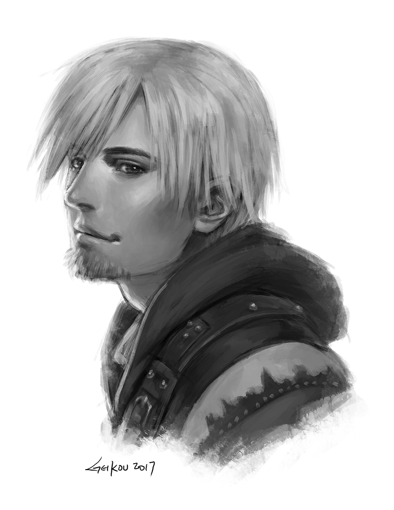

"Nothing better than a good pipe and a nice sight to go along with it...
it's always sad to see how few people can truly appreciate these things."
- Jespar Dal' Varek
Jespar Mitumial Dal'Varek is a mercenary originally employed by Constantine Firespark to look into Magister Yero's life. He is one of the
two romance options, the other being Calia Sakaresh.The Prophet is introduced to Jespar when he saves them after the bandit attack against Finn
and Carbos. He determines that the Prophet is suffering from Arcane Fever and that they should speak to his employer, The Holy Order, in exchange
for helping him complete his current job. Jespar is continually employed by The Holy Order and joins the Prophet on several quests. If the player
has a higher affinity with him than with Calia Sakaresh or if he is romanced, he will accompany the player on the final quest. He can usually be
found at the Drunken Nomad tavern in the Foreign Quarter of Ark.

A fanmade portrait of Jespar
The following list consists of a few quests relating to Jespar
- The Void - You'll wake up be greeted by a man
who introduces himself as Jespar, and informs you that Finn and Carbos' camp was attacked, and you were the only survivor. He then goes on to
explain that he works for The Holy Order, and that his employer can help treat your Enderal:Arcane Fever. However, Jespar wants you to help him
first before bringing you to his employer.
- The First Steps - "Joseph the Mercenary"
will introduce you to Constantin Firespark, who will examine you. Firespark will send you off to find Lashiri, a Nehremese mage who can perform
the ritual to control your magic. Jespar will give you the Every Day Like the Last, Part I quest after Firespark leaves.
- The Word of The Dead - The archmagister
will explain to you that to be able to enter the mind of the dead Pyrean, you will need to find an artifact called Word of the Dead, which is rumored
to be in the hands of a collector called the Aged Man. The Grandmaster will warn you that no violent course of action should be taken against him, as
even the Light-Born ordered The Order no not meddle in his affairs. The plan is to look for the artifact, teleport the dead Pyrean to the artifact, and
then use it to enter the mind of the dead Pyrean, where you should look for the last words of the ritual.
- Into The Deep - This quest will begin automatically
after the end of Interlude. Constantine Firespark will tell you to meet him and Jespar Dal'Varek in Fogville, to search for the Sigil Gem that can open
the door to the Crystal Temple. After fighting your way through a few Arps, you'll encounter Jespar and Firespark, who complains that you took too long
to arrive. He'll then head for the temple and leave you with Jespar to search for the gem. Jespar will suggest that you search the Town Hall first.
- The Lion's Den - This quest will begin automatically after the end of Into the Deep, when Jespar wakes
you up inside the Undertrain. Leave the train and you'll find yourself in a station very similar to the one you just left, plagued by various weak skeletal
Lost Ones. Make your way through the calcium-filled foes and follow Jespar into the tropical Halfmoon Isle. As you near the Nehrimese camp, Jespar will
stop you and give you your Silver Plate, suggesting that you split up to reduce the damage if any of you is caught.